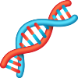

Bioinformatics
ChIP-seq and RNA-seq: Data analysis and visualisation using suite of command-line tools and R packages (ChIPseeker, clusterProfiler)
Programming languages
R: Data wrangling and tidying, data visualisation using ggplot2. Python: Intermediate-level
Proteomics analysis
analysis of RIME and ChIP-SICAP MS data using R packages.
Other software programs
LaTeX, Snapgene, ImageJ, CellProfiler

NGS sample preparation
Perform ChIP pull-down, extract RNA, and prepare barcoded libraries for sequencing.
CRISPR genome-editing
Epitope and fluorescent reporter tagging in mammalian stem cells, gene knock-out using Cas9 RNP approach
Protein partners
Identify protein partners using RIME and native IP pull-down.
Other techniques
Fluorescence microscopy, Gibson and gateway cloning, real-time qPCR, DNA and RNA extraction, Western Blotting